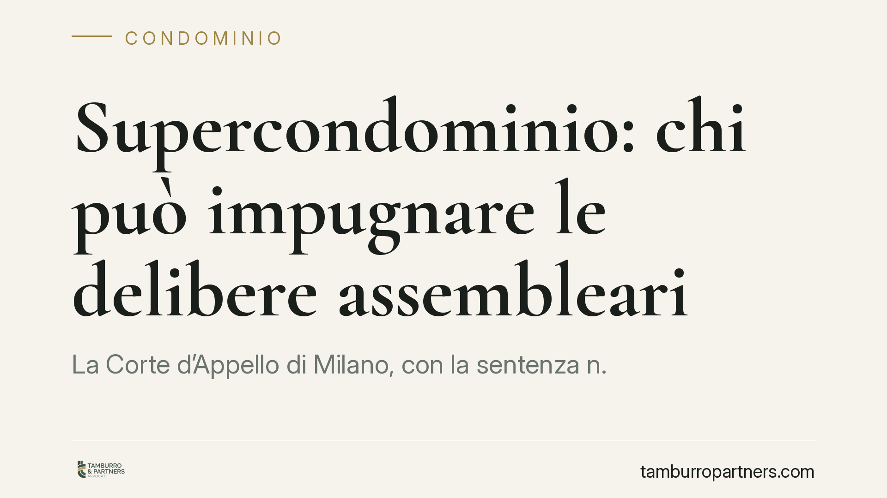

Supercondominio: chi può impugnare le delibere assembleari
La Corte d'Appello di Milano, con la sentenza n. 595/2026, fissa un punto fermo sulle liti nei supercondomìni: la delibera assembleare può essere impugnata solo dal singolo proprietario, non dall'amministratore né dal rappresentante di palazzo. Serve inoltre che il proprio delegato fosse assente, dissenziente o astenuto. Una precisazione che incide sulla legittimazione ad agire e sui tempi di reazione.

Il caso
Nei supercondomìni — complessi formati da più edifici che condividono beni o servizi comuni (strade interne, impianti, aree verdi) — le decisioni sulle parti condivise passano per un'assemblea composta dai rappresentanti dei singoli palazzi.
La questione affrontata dalla Corte d'Appello di Milano, sezione terza (sentenza n. 595/2026), riguarda un nodo pratico ricorrente: quando una delibera di questo organo viene ritenuta illegittima, chi ha il diritto di contestarla davanti al giudice?
La risposta della Corte è netta: la legittimazione a impugnare spetta al singolo condomino, titolare della proprietà, e non all'amministratore né al rappresentante di palazzo che ha partecipato al voto.
Inquadramento normativo
Il punto di partenza è l'art. 67 delle disposizioni di attuazione del codice civile, che disciplina la rappresentanza negli edifici in condominio e, al quarto comma, prevede proprio la figura del rappresentante nominato dai condomini di ciascun fabbricato per partecipare all'assemblea del supercondominio.
Questo rappresentante agisce come mandatario: esprime il voto, ma non è titolare del diritto sostanziale sul bene. La titolarità resta in capo ai singoli proprietari. Di conseguenza, il potere di impugnare la delibera — che è esercizio di un diritto proprio — non si trasferisce al delegato.
Sul piano processuale rileva l'art. 77 c.p.c., secondo cui il potere di rappresentanza in giudizio va conferito espressamente: il mandato a votare in assemblea non include automaticamente quello a stare in causa. Allo stesso modo, l'art. 1131 c.c. circoscrive la rappresentanza dell'amministratore agli atti rientranti nelle sue attribuzioni, escludendo l'impugnazione delle delibere assembleari nell'interesse dei singoli.
Il requisito della posizione al voto
La Corte ribadisce un secondo presupposto, già consolidato per il condominio ordinario: può impugnare solo chi, al momento della decisione, era assente, dissenziente o astenuto.
Il condomino che ha votato a favore ha concorso a formare la volontà assembleare e non può poi contestarla. Nel supercondominio questo criterio si misura sulla posizione tenuta dal rappresentante di palazzo in assemblea: se questi ha espresso voto favorevole, i condomini di quel fabbricato perdono la legittimazione a impugnare, salvo i casi di nullità (vizi più gravi, rilevabili da chiunque ne abbia interesse).
Implicazioni pratiche
Per chi vive in un supercondominio la pronuncia ha ricadute concrete.
Il primo effetto riguarda i tempi: l'azione di annullamento va proposta entro trenta giorni dalla delibera (o dalla comunicazione del verbale per gli assenti), come previsto dall'art. 1137 c.c. Se si attende che sia l'amministratore o il rappresentante a muoversi, si rischia di far decorrere il termine senza che nessun soggetto legittimato abbia agito.
Il secondo effetto riguarda la strategia: il singolo proprietario deve attivarsi personalmente, verificando preventivamente come ha votato il proprio rappresentante. Un voto favorevole del delegato può precludere l'impugnazione, con conseguenze che è bene conoscere prima dell'assemblea, non dopo.
Infine, la decisione invita i condomini a presidiare la formazione del voto a monte: le istruzioni date al rappresentante di palazzo diventano decisive, perché incidono sulla possibilità stessa di contestare l'esito.
Cosa fare in concreto
- Verificate la vostra posizione al voto. Prima di pensare all'impugnazione, controllate nel verbale come ha votato il rappresentante del vostro fabbricato: assenza, dissenso o astensione sono condizioni necessarie.
- Rispettate il termine di trenta giorni. Calcolate la decorrenza dalla delibera o dalla ricezione del verbale e non confidate sull'iniziativa di amministratore o delegato.
- Agite personalmente. La legittimazione è vostra in quanto proprietari: non delegate l'impugnazione a chi non ne ha il potere.
- Impartite istruzioni chiare al rappresentante di palazzo. Fissate per iscritto la posizione da tenere sui punti sensibili all'ordine del giorno.
- Distinguete annullabilità e nullità. Per i vizi più gravi i termini e i presupposti cambiano: una valutazione tecnica preliminare evita errori irreparabili.
Conclusioni
La sentenza riporta al centro il proprietario come unico titolare del diritto di contestare le scelte del supercondominio. Una logica coerente con l'impianto del codice, che però impone attenzione ai tempi e alla posizione tenuta in assemblea.
Contributo informativo a cura di Tamburro & Partners - Avv. Giuseppe Tamburro. Non costituisce parere legale.
Ogni condominio ha una storia a sé.
Se gestisci un'amministrazione e vuoi un confronto su una specifica questione condominiale, scrivi allo studio. Ti rispondiamo entro un giorno lavorativo.